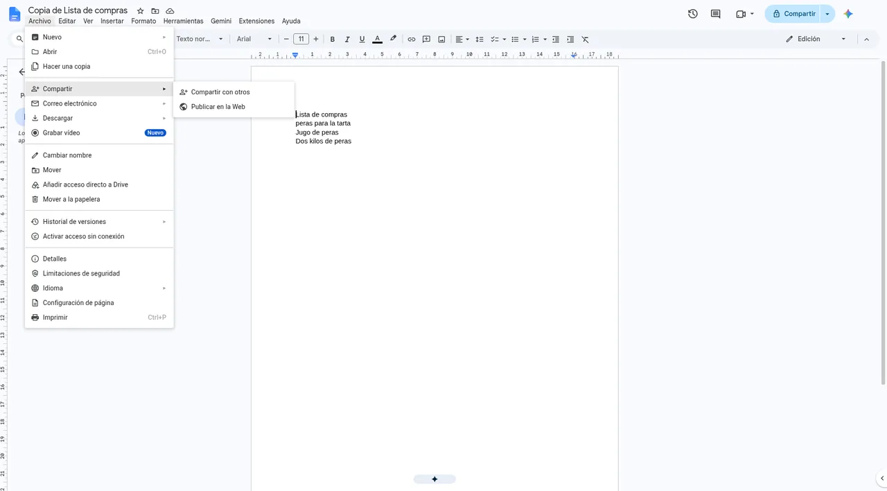
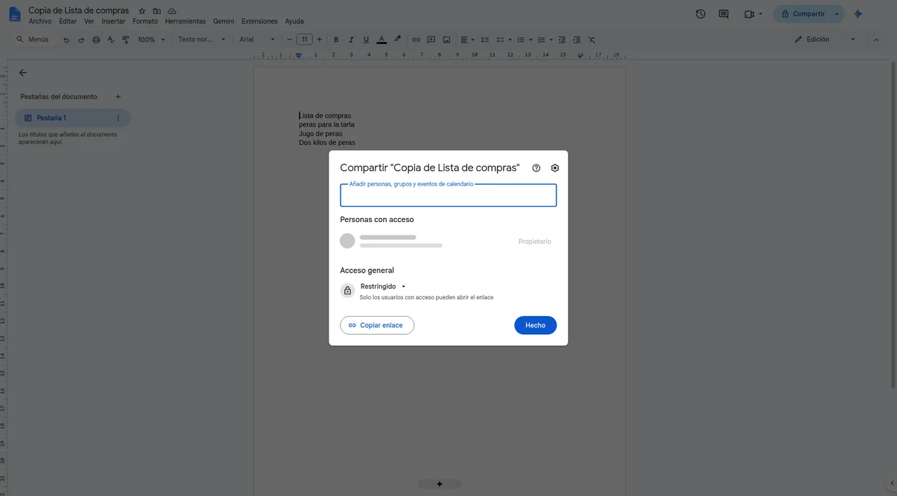
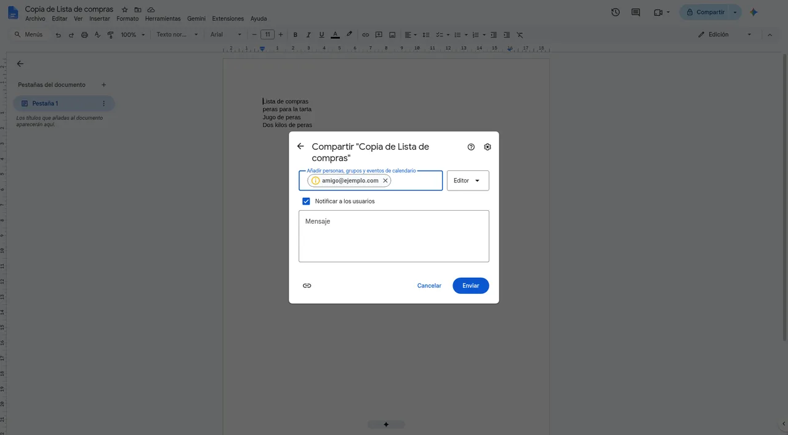
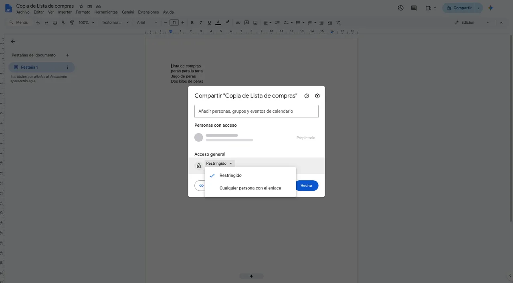
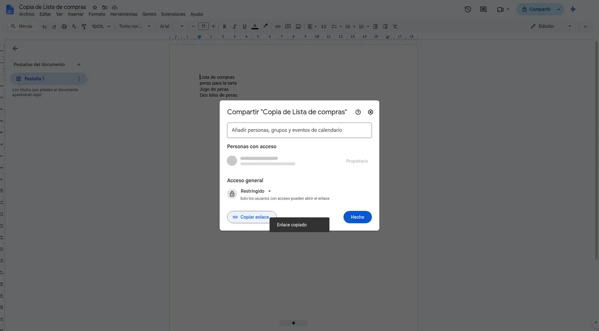

Curso de Google Documentos › Archivo › Lección 4
Lección 4 de 53 · menú Archivo
Cómo compartir un Google Doc (roles y enlace)
Fecha del video: · Programado
¿Querés que otra persona vea o edite tu documento? Así se comparte un Google Doc desde el menú Archivo.
En el ejemplo usamos una copia de prueba de «Lista de compras». El correo que aparece es de ejemplo (amigo@ejemplo.com); no se compartió con nadie.
Paso 1: abrí Archivo → Compartir → Compartir con otros
Andá a Archivo → Compartir y tocá «Compartir con otros». Se abre la ventana para agregar personas y elegir el acceso.


Paso 2: escribí el correo y elegí el rol
Escribí el correo de la persona. Después elegí su rol: Lector solo mira, Comentador deja comentarios y Editor puede cambiar todo. Si querés, sumá un mensaje y tocá «Enviar».


Paso 3: elegí el acceso general y copiá el enlace
En «Acceso general» podés dejar «Restringido» (solo las personas que agregaste) o elegir «Cualquier persona con el enlace». Después tocá «Copiar enlace» y pegalo donde quieras.


Mirá el Short
Estreno del Short: 23/11/2026 · 09:00 (hora Argentina)
Video relacionado: Google Docs: menú Archivo paso a paso (tutorial completo) — el video largo del menú Archivo (verlo en YouTube).
Fuente oficial: Ayuda de Editores de Documentos de Google. Capturas propias en un documento de ejemplo («Lista de compras»). El video usa voz generada con IA.